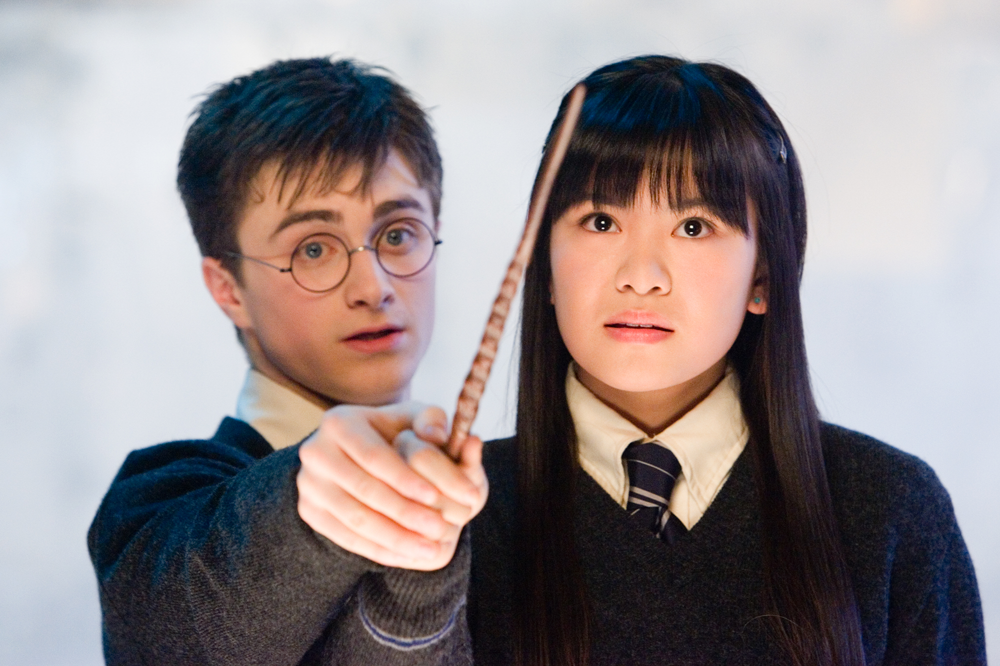
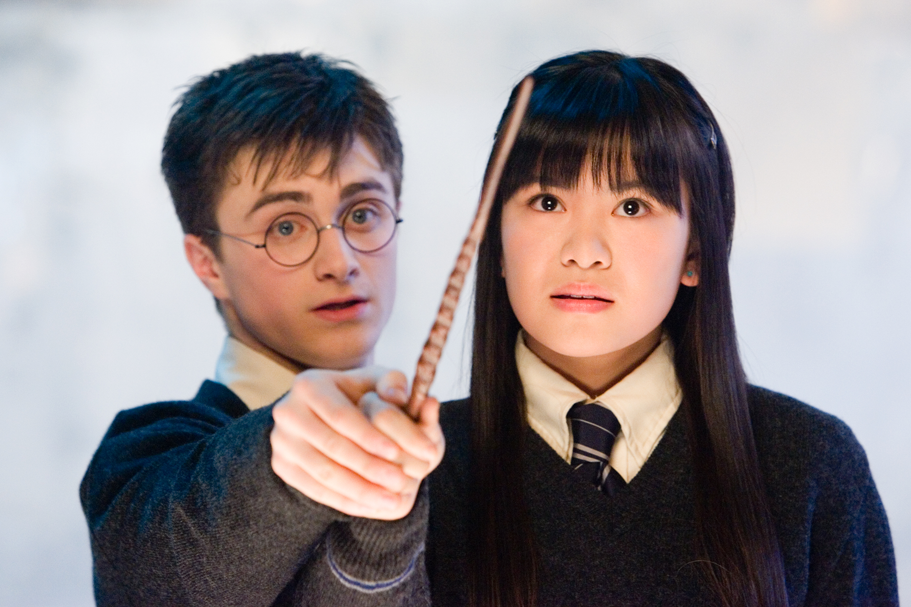

Homepage
Welcome to Hogwarts School of Witchcraft and Wizardry!
 

A Brief History
Founded in the 10th century by Godric Gryffindor, Rowena Ravenclaw, Helga Hufflepuff and Salazar Slytherin, Hogwarts was established in the Highlands of Scotland to educate young wizards and witches as well as to keep students safe from muggle persecution. Theory has it that Rowena Ravenclaw came up with the name of Hogwarts after dreaming of a warty hog that led her to a cliff by a lake. Since then, Hogwarts educated most wizarding children in the United Kingdom and its surrounding areas, keeping its location hidden from other wizarding schools and muggles.

Our Philosophy
Being a school of magic, many subjects at Hogwarts differ from the studies of a typical school. Some subjects, such as History of Magic, derive from non-wizard or muggle subjects, but many others, such as charms and apparition classes, are unique to the wizarding world. There are twelve named teachers (referred to as Professors), each specialising in a single subject. All professors are overseen by a school head and deputy head. Transfiguration, Defence Against the Dark Arts, Charms, Potions, Astronomy, History of Magic, and Herbology are compulsory subjects for the first five years, as well as flying lessons. At the end of their second year, students are required to add at least two optional subjects to their syllabus for the start of the third year. The five choices are Arithmancy, Muggle Studies, Divination, Study of Ancient Runes and Care of Magical Creatures. According to J.K. Rowling, "very specialised subjects such as alchemy are sometimes offered in the final two years, if there is sufficient demand."
At the end of their fifth year, students take the Ordinary Wizarding Level (O.W.L.) examinations for all subjects in which they are enrolled.[citation needed] Each examination consists of a written knowledge test and, where applicable, a practical demonstration of skills before a panel of proctors from the Ministry of Magic. Students who achieve a high enough O.W.L. grade in a particular subject may take its advanced course for the final two years, in preparation for the Nastily Exhausting Wizarding Tests (N.E.W.T.) given at the end of the seventh year.

Admission to Hogwarts is selective, in that children who show magical ability will automatically gain a place,and squibs cannot attend the school as students (though they can work there in other roles, as Argus Filch does). A magical quill at Hogwarts detects the birth of magical children and writes their names into a large parchment book,[citation needed] but there is no admission test because "you are either magical or you are not." Every year, a teacher checks this book and sends a letter to the children who are turning eleven. Acceptance or refusal of a place at Hogwarts must be posted by 31 July. The letter also contains a list of supplies like spell books, uniform, and other things that the student will need. The prospective student is expected to buy all the necessary materials, normally from shops in Diagon Alley, a concealed street near Charing Cross Road in London that can be found behind the wizarding pub, The Leaky Cauldron. Students who cannot afford their supplies can receive financial aid from the school, as happened with the young orphan Tom Riddle.
Letters to Muggle-born witches and wizards, who may not be aware of their powers and are unfamiliar with the concealed wizarding world, are delivered in person by a member of Hogwarts staff, who then explains to the parents or guardians about magical society, and reassures them regarding this news.
Though the school is in Great Britain, its catchment area is the wider British Isles, as Irish students can also attend.
Materials
Each student is allowed to bring an owl, a cat or a toad. Along with the acceptance letter, first-year students are sent a list of required equipment which includes a wand, subject books, a standard size 2 pewter cauldron, a set of brass scales, a set of glass or crystal phials, a kit of basic potion ingredients (for Potions), and a telescope (for Astronomy). The Hogwarts uniform consists of plain work robes in black, a plain black hat, a pair of protective gloves, and a black winter cloak with silver fastenings. Each uniform must contain the wearer's nametag. First years are not allowed a broomstick of their own.

Hogwarts is divided into four houses, each bearing the last name of its founder: Godric Gryffindor, Salazar Slytherin, Rowena Ravenclaw and Helga Hufflepuff. Throughout the school year, the houses compete for the House Cup, gaining and losing points based on actions such as performance in class and rule violations. The house with the highest end-of-year total wins and has its colours displayed in the Great Hall for the following school year. Each house also has its own Quidditch team that competes for the Quidditch Cup. These two competitions breed rivalries between the houses. Houses at Hogwarts are living and learning communities for their students. Each house is under the authority of one of the Hogwarts staff members. The Heads of the houses, as they are called, are in charge of giving their students important information, dealing with matters of severe punishment, and responding to emergencies in their houses, among other things. The dormitory and common room of a House are, barring rare exceptions, inaccessible to students belonging to other Houses; however, different houses will share classes as they are based on year group rather than House.
In the early days of Hogwarts, the four founders hand-picked students for their Houses. When the founders worried how students would be selected after their deaths, Godric Gryffindor took his hat off and they each added knowledge to it, allowing the Sorting Hat to choose the students by judging each student's qualities and placing them in the most appropriate house. The student's own choices may affect the decision: the clearest example is the Hat telling Harry that he would do well in Slytherin in the first book, but ultimately selecting Gryffindor after Harry asks it not to put him in Slytherin.
The translators of the books' foreign editions had difficulty translating the "house" concept; in countries where this system does not exist, no word could adequately convey the importance of belonging to a house, the loyalty owed to it, and the pride taken in prizes won by the house.
Gryffindor

Gryffindor values courage, bravery, nerve, and chivalry. Gryffindor's mascot is the lion, and its colours are scarlet red and gold (maroon and gold on the ties and scarves). During the books, the Head of this house is the Transfiguration Professor and Deputy Headmistress, Minerva McGonagall until she becomes headmistress, and the house ghost is Sir Nicholas de Mimsy-Porpington, more commonly known as Nearly Headless Nick. According to Rowling, Gryffindor corresponds roughly to the element of fire.[9] The founder of the house is Godric Gryffindor.
The Gryffindor common room is in one of the castle's highest towers, and its entrance is on the seventh floor in the east wing of the castle and is guarded by a painting of The Fat Lady, who is garbed in a pink dress. She permits entry only after being given the correct password, as was established in the third book, when Sirius Black tried forcing entry into the tower, only to be blocked by The Fat Lady after he could not give the correct password. In the first book, Neville Longbottom tends to forget the password and must wait near the painting until other Gryffindors arrive to open the way.[10]
Hufflepuff

Hufflepuff values hard work, patience, justice, and loyalty. The house mascot is the badger, and canary yellow and black (or golden yellow and graphite in the Fantastic Beasts films) are its colours. During the books, the Head of this house is the Herbology Professor Pomona Sprout, and the house ghost is the Fat Friar. According to Rowling, Hufflepuff corresponds roughly to the element of earth. The founder of this house is Helga Hufflepuff.
The entrance to the Hufflepuff dormitories and common room entrance is concealed in a pile of large barrels in an alcove in the corridor that holds the kitchen. To enter, one must tap the barrel two from the bottom in the middle of the second row in the rhythm of "Helga Hufflepuff". Unlike any other house, the Hufflepuff common room has a repelling device that douses the illegal entrant in vinegar if the wrong lid is tapped or the rhythm is wrong. The Hufflepuff common room is filled with yellow hangings and fat armchairs and it has little tunnels leading to the dormitories, all of which have perfectly round doors, like barrel tops.

Ravenclaw values intelligence, learning, wisdom and wit.[HP5][HP7] The house mascot is an eagle and the house colours are blue and bronze (blue and silver in the Harry Potter and Fantastic Beasts films and on the ties and scarves). During the books, the head of this house is the Charms teacher, Professor Filius Flitwick, and the house ghost is the Grey Lady. According to Rowling, Ravenclaw corresponds roughly to the element of air.[9] The founder of this house is Rowena Ravenclaw.
The dormitories are in Ravenclaw Tower, on the west side of Hogwarts. The common room is round and filled with blue hangings and armchairs, has a domed ceiling painted with stars and features a replica statue of Rowena wearing her diadem. Harry also notes that Ravenclaws "have a spectacular view of the surrounding mountains". A logical riddle must be solved to gain entry, whereas the Gryffindor and Slytherin common rooms only require a password. Professor McGonagall, the head of the Gryffindor House, solves the riddle accurately.
Slytherin

Slytherin values ambition, cunning, leadership, and resourcefulness; the Sorting Hat said in Harry Potter and the Philosopher's Stone that Slytherins will do anything to get their way. The house mascot of Slytherin is the serpent, and the house colours are green and silver. Throughout the series, until the seventh book, the Head of House is Professor Severus Snape. Then, the previous Head of House Professor Horace Slughorn comes out of retirement, re-assuming authority after Snape becomes headmaster. The ghost of Slytherin house is Bloody Baron.[13] According to Rowling, Slytherin corresponds roughly to the element of water.[9] The founder of this house is Salazar Slytherin.
The Slytherin dormitories and common room are reached by speaking a password to a patch of bare stone wall in the dungeons, which causes a hidden door to open. The Slytherin common room is a long, low, dungeon-style room, under the Hogwarts Lake, furnished with green lamps and carved armchairs. The room is described in the second book as having a greenish glow.
The Sorting Hat claims that blood purity is a factor in selecting Slytherins, although this is not mentioned until the fifth book. There is no reason to believe, however, that Muggle-born students are not sorted there, merely that pure-blooded students are more desirable to that house, as there are several examples of half-bloods in the house such as Snape and Tom Riddle/Voldemort and Harry himself was only excluded from the house at his own insistence. In Deathly Hallows, a group of Snatchers claim that "not many Mudbloods" are sorted into Slytherin.
When believing Harry to be dead and thinking that he has final victory in his grasp, Voldemort proclaims his intention to abolish the other three houses and force all Hogwarts students into Slytherin. This design is foiled by his defeat and death, after which Slytherin becomes more diluted in its blood purity, no longer remaining the pure-blood bastion it once was.
Student Life
The day begins at Hogwarts with breakfast in the Great Hall. Students sit at their own House table and can eat and socialise, or finish homework. The Headmaster or Headmistress eats with the professors at the High Table placed at the far end of the hall. During breakfast, owls bring in the students' post, generally consisting of The Daily Prophet, letters from parents or friends, or packages from home. A bell signals the start of the first class of the morning at 9 am.
There are two long morning classes with a short break in between them for students to get to their next class. After lunch, classes resume at 1 pm, and there is a break around afternoon teatime before another class period. The classes are about one hour in length, with occasional double periods lasting two hours. Classes end around five o'clock. First-year students get Friday afternoons off, while sixth- and seventh-year students have several free periods during the week. In the evening, students eat their dinner in the Great Hall, after which they are expected to be in their common rooms. Astronomy classes take place late at night in the Astronomy Tower.
The four House dormitories have secret entrances, generally known only to members of that house and require a password (Gryffindor & Slytherin), riddle answer (Ravenclaw) or ritual (Hufflepuff) in order to gain entrance. Inside is the common room, which contains armchairs and sofas for the pupils and tables for studying and homework. There are fireplaces to keep the rooms warm, and students either relax here in the evenings or else complete their homework, but may complete their work in the bedroom. There are notice boards in each common room and at other strategic points throughout the school. The students sleep in their House dormitories, which branch off from the common rooms. Each dormitory gets at least two rooms; one for boys and one for girls (an enchantment prevents boys from entering the girls' area, although there is no spell to prevent the reverse from occurring). Each student sleeps in a large four-poster bed with bed covers and heavy curtains in the House colours, and thick white pillows. There is a bedside table for each bed, and each dormitory has a jug of water and goblets on a tray.
On designated weekends, Hogwarts students in their third year or higher, with a signed permission slip, are permitted to walk to the nearby wizarding village of Hogsmeade, where they can relax and enjoy the pubs, restaurants and shops. There appears to be a good relationship between the school and the village, and the students get on well with the locals. Favourite places in Hogsmeade include Honeydukes Sweetshop, Zonko's Joke Shop, clothing stores such as Gladrags Wizardwear, the Shrieking Shack (regarded as the most haunted building in Britain), the pubs The Three Broomsticks and The Hog's Head, and Madam Puddifoot's coffee shop.
Student Life
In the novels, Hogwarts is somewhere in Scotland[16] (the film Prisoner of Azkaban says that Dufftown is near). The school is depicted as having numerous charms and spells on and around it that make it impossible for a Muggle to locate it. Muggles cannot see the school; rather, they see only ruins and several warnings of danger.[GF Ch.11] The castle's setting is described as having extensive grounds with sloping lawns, flowerbeds and vegetable patches, a loch (called The Black Lake), a large dense forest (called the Forbidden Forest), several greenhouses and other outbuildings, and a full-size Quidditch pitch. There is also an owlery, which houses all the owls owned by the school and those owned by students. Some rooms in the school tend to "move around", and so do the stairs in the grand staircase.[17] Witches and wizards cannot Apparate or Disapparate in Hogwarts grounds, except when the Headmaster lifts the enchantment, whether only in certain areas or for the entire campus, so as to make the school less vulnerable when it serves the headmaster to allow Apparition.[GF Ch.28] Electricity and electronic devices are not found at Hogwarts. In Harry Potter and the Goblet of Fire, Hermione indicates that due to the high levels of magic, "substitutes for magic (that) Muggles use" such as computers, radar and electricity "go haywire" around Hogwarts. Radios however, make an exception. Rowling explains this by saying that the radios are not powered by electricity but by magic.
Hogwarts is on the shore of a lake, sometimes called the Black Lake. In that lake are merpeople, Grindylows, and a giant squid. The giant squid does not attack humans and sometimes acts as a lifeguard when students are in the lake. The castle and its grounds are home to many secret areas as well as well-known and well-used places.